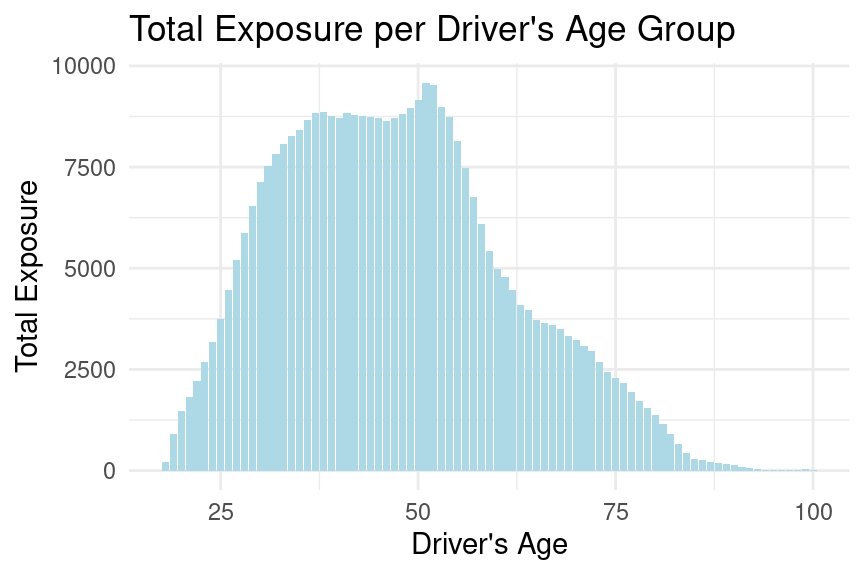

Learn how to do data importing, quality check and cleansing.
Learn how to do data manipulation and transformation.
Case study A - French Insurance Dataset
We will continue to use the freMTPL2freq dataset. As a preview, this dataset includes risk features collected for 677,991 motor third-party liability policies, observed mostly over one year. In addtion, freMTPL2freq contains both the risk features and the claim number per policy. The freMTPL2freq dataset consists of 12 columns:
IDpol: The policy ID (used to link with the claims dataset).
ClaimNb: Number of claims during the exposure period.
Exposure: The period of exposure for a policy, in years.
Area: The area code.
VehPower: The power of the car (ordered categorical).
VehAge: The vehicle age, in years.
DrivAge: The driver age, in years (in France, people can drive a car at 18).
BonusMalus: Bonus/malus, between 50 and 350: <100 means bonus, >100 means malus in France.
VehBrand: The car brand (unknown categories).
VehGas: The car gas, Diesel or regular.
Density: The density of inhabitants (number of inhabitants per km2) in the city the driver of the car lives in.
Region: The policy regions in France (based on a standard French classification).
Let’s first import the data, and then begin by briefly examining it.
# Load the required packageslibrary(CASdatasets)library(tidyverse)# Load the datadata(freMTPL2freq)# Briefly check the datastr(freMTPL2freq)
IDpol ClaimNb Exposure VehPower
Min. : 1 n.vars :1 Min. :0.002732 Min. : 4.000
1st Qu.:1157951 n.cases:36102 1st Qu.:0.180000 1st Qu.: 5.000
Median :2272152 Median :0.490000 Median : 6.000
Mean :2621857 Mean :0.528750 Mean : 6.455
3rd Qu.:4046274 3rd Qu.:0.990000 3rd Qu.: 7.000
Max. :6114330 Max. :2.010000 Max. :15.000
VehAge DrivAge BonusMalus VehBrand
Min. : 0.000 Min. : 18.0 Min. : 50.00 B12 :166024
1st Qu.: 2.000 1st Qu.: 34.0 1st Qu.: 50.00 B1 :162736
Median : 6.000 Median : 44.0 Median : 50.00 B2 :159861
Mean : 7.044 Mean : 45.5 Mean : 59.76 B3 : 53395
3rd Qu.: 11.000 3rd Qu.: 55.0 3rd Qu.: 64.00 B5 : 34753
Max. :100.000 Max. :100.0 Max. :230.00 B6 : 28548
(Other): 72696
VehGas Area Density
Length:678013 A:103957 Min. : 1
Class :character B: 75459 1st Qu.: 92
Mode :character C:191880 Median : 393
D:151596 Mean : 1792
E:137167 3rd Qu.: 1658
F: 17954 Max. :27000
Region
Centre :160601
Rhone-Alpes : 84752
Provence-Alpes-Cotes-D'Azur: 79315
Ile-de-France : 69791
Bretagne : 42122
Nord-Pas-de-Calais : 40275
(Other) :201157
From the outputs above, we can see that there are 678013 individual car insurance policies and 12 variables associated with each policy. At first glance, without further checking, we notice that the data types of some columns may need adjustment. For example, ClaimNb is stored as a table, and VehGas is stored as a character. We may want to convert these to integer and factor, respectively. However, note that some modeling packages are smart enough to handle this automatically, so we may not need to do this ourselves.
# Load the required packages# Convert ClaimNb from a table to integerfreMTPL2freq$ClaimNb <-as.integer(as.numeric(freMTPL2freq$ClaimNb))# Convert VehGas from character to factorfreMTPL2freq$VehGas <-as.factor(freMTPL2freq$VehGas)# Recheck the data structure after adjustment # str(freMTPL2freq)# summary(freMTPL2freq)
Task Solution: Are There Any NA (Missing) Values Present in the Dataset?
# Check for NA values in freMTPL2freqna_summary_freq <-sapply(freMTPL2freq, function(x) sum(is.na(x)))print(na_summary_freq)
IDpol ClaimNb Exposure VehPower VehAge DrivAge BonusMalus
0 0 0 0 0 0 0
VehBrand VehGas Area Density Region
0 0 0 0 0
Fortunately, there are no missing values in this dataset.
Task Solution: Check the Distribution of Claim Exposure and Number of Claims, and Comment on Any Unusual Observations
# Histogram of claim exposure using ggplot2ggplot(freMTPL2freq, aes(x = Exposure)) +geom_histogram(binwidth =0.1, fill ="lightblue", color ="black") +labs(title ="Distribution of Claim Exposure", x ="Exposure", y ="Frequency") +theme_minimal()
# Density plot of claim exposure using ggplot2ggplot(freMTPL2freq, aes(x = Exposure)) +geom_density(fill ="blue", alpha =0.5) +labs(title ="Density Plot of Claim Exposure", x ="Exposure", y ="Density") +theme_minimal()
# Boxplot of claim exposure using ggplot2ggplot(freMTPL2freq, aes(y = Exposure)) +geom_boxplot(fill ="lightgreen", color ="black") +labs(title ="Boxplot of Claim Exposure", y ="Exposure") +theme_minimal()
# Frequency table of the number of claims using dplyrfreMTPL2freq %>%count(ClaimNb) %>%print()
We consider several plots to depict the distribution of claim exposure. Typically, you would only need to show one of these if you want to include exposure in your EDA. Note that some exposures are greater than one year (i.e., 1224 policies). Additionally, we present the frequency table of the number of claims. There are only 9 policies with more than 4 claims, as shown in the table. Without further information, it is difficult to determine whether these entries are errors or not. You can choose to keep them or consider capping them (e.g., in Noll, Salzmann, and Wuthrich (2020), all exposures greater than 1 are set to 1, and all claim numbers greater than 4 are set to 4).
Task Solution: Check if Area Is an Ordinal Categorical Variable
# Calculate total exposure per area codetotal_exposure_per_area <- freMTPL2freq %>%group_by(Area) %>%summarise(TotalExposure =sum(Exposure, na.rm =TRUE))# Bar plot of total exposure per area code using ggplot2ggplot(total_exposure_per_area, aes(x = Area, y = TotalExposure)) +geom_bar(stat ="identity", fill ="lightblue") +labs(title ="Total Exposure per Area Code", x ="Area Code", y ="Total Exposure") +theme_minimal()
# Calculate claim frequency per area codeclaim_frequency_per_area <- freMTPL2freq %>%group_by(Area) %>%summarise(TotalClaims =sum(ClaimNb, na.rm =TRUE),TotalExposure =sum(Exposure, na.rm =TRUE),ClaimFrequency = TotalClaims / TotalExposure)# Bar plot of claim frequency per area code using ggplot2ggplot(claim_frequency_per_area, aes(x = Area, y = ClaimFrequency)) +geom_bar(stat ="identity", fill ="lightgreen") +labs(title ="Observed Claim Frequency per Area Code", x ="Area Code", y ="Claim Frequency") +theme_minimal()
We first checked whether the level of total exposure is roughly the same for each area, which is not the case; Area F clearly has the lowest total exposure. Then, by examining the observed claim frequency per area code, we confirmed that Area is an ordinal categorical variable, as the observed claim frequency increases consistently from Area A to Area F.
Exercise
Is VehPower an ordinal variable? Can you follow the code above to check this?
Task Solution: Explore the Relationship Between Age and Claim Frequency. How Does Age Influence the Frequency of Claims?
# Calculate total exposure per driver's age grouptotal_exposure_per_age <- freMTPL2freq %>%group_by(DrivAge) %>%summarise(TotalExposure =sum(Exposure, na.rm =TRUE)) %>%arrange(DrivAge)# Bar plot of total exposure per driver's age group using ggplot2ggplot(total_exposure_per_age, aes(x = DrivAge, y = TotalExposure)) +geom_bar(stat ="identity", fill ="lightblue") +labs(title ="Total Exposure per Driver's Age Group", x ="Driver's Age", y ="Total Exposure") +theme_minimal()

# Calculate observed frequency per driver's age groupobserved_frequency_per_age <- freMTPL2freq %>%group_by(DrivAge) %>%summarise(TotalClaims =sum(ClaimNb, na.rm =TRUE),TotalExposure =sum(Exposure, na.rm =TRUE),ObservedFrequency = TotalClaims / TotalExposure) %>%arrange(DrivAge)# Line plot of observed frequency per driver's age group using ggplot2ggplot(observed_frequency_per_age, aes(x = DrivAge, y = ObservedFrequency)) +geom_point(color ="red", size =2) +labs(title ="Observed Frequency per Driver's Age Group", x ="Driver's Age", y ="Observed Frequency") +theme_minimal()
From the above plots, we can observe that the relationship between the predictor Age and the observed claim frequency is non-linear. Please note this, as we will explore how to incorporate this into modeling in the coming weeks.
Exercise
Can you follow the code above or write your own code to explore the relationship between the (observed) claim frequency and other predictors in the dataset? Did you find any interesting findings?
Task Solution: Analyze the Interrelationships Between the Various Predictors in the Dataset. Identify Any Significant Correlations or Dependencies, and Discuss Their Potential Implications for Modeling.
# Convert the Area factor to numeric based on its levelsfreMTPL2freq$AreaNumeric <-as.numeric(as.ordered(freMTPL2freq$Area))# Select the relevant variablescorrelation_data <- freMTPL2freq %>%select(AreaNumeric, VehPower, VehAge, DrivAge, BonusMalus, Density)# Calculate the Pearson correlation matrixcorrelation_matrix <-cor(correlation_data, method ="pearson")# Display the correlation matrixprint(correlation_matrix)
# Load additional packages for visualization if neededlibrary(ggcorrplot)# Visualize the Pearson correlation matrixggcorrplot(correlation_matrix, method ="circle", type ="lower", lab =TRUE, title ="Pearson Correlation Matrix")
Here, we focus on checking the correlations between numerical and ordinal categorical features. Notably, there is a strong positive correlation between Area and Density, followed by a negative dependence between DrivAge and BonusMalus. Examining relationships between features is important because it helps identify multicollinearity, reveals potential interactions, and provides insights into how features jointly influence the target variable.
Exercise
In the above, we only considered Pearson’s correlation between numerical features. Can you explore more of the interrelationships between predictors? For example, we might be interested in how vehicle brand interplays with other vehicle characteristics, or even with driver or policy characteristics.
For your reference, you can refer to for some in-depth bivariate analysis in EDA for this dataset.
Case study B - Default of Credit Card Clients
The data set is the customers’ default payments which include 30000 instances described over 24 attributes. The data can be downloaded from link. This case study considers the customers default payments in Taiwan and compares the predictive accuracy of probability of default among the shrinkage techniques namely lasso, ridge, and elastic net regression and non-shrinkage methods such as logistic regression. This case study employs a binary variable, default payment (Yes =1, No = 0), as the response variable. The data used in this case study have 23 variables as explanatory variables:
X1: Amount of the given credit (NT dollar): it includes both the individual consumer credit and his/her family (supplementary) credit.
X6 - X11: History of past payment. We tracked the past monthly payment records (from April to September, 2005) as follows: X6= the repayment status in September, 2005; X7 = the repayment status in August, 2005; \ldots; X11 = the repayment status in April, 2005. The measurement scale1 for the repayment status is: -2: No consumption; -1: Paid in full; 0: The use of revolving credit; 1 = payment delay for one month; 2 = payment delay for two months; . . .; 8 = payment delay for eight months; 9 = payment delay for nine months and above.
X12- X17: Amount of bill statement (NT dollar). X12 = amount of bill statement in September, 2005; X13 = amount of bill statement in August, 2005; \ldots ; X17 = amount of bill statement in April, 2005.
X18 - X23: Amount of previous payment (NT dollar). X18 = amount paid in September, 2005; X19 = amount paid in August, 2005;\ldots; X23 = amount paid in April, 2005.
Import data
The credit card issuers in Taiwan faced the cash and credit card debt crisis in 2005. To increase market share, card-issuing banks in Taiwan over-issued cash and credit cards to unqualified applicants. At the same time, most cardholders, irrespective of their repayment ability, they overused credit card for consumption and accumulated heavy credit and cash card debts. The crisis caused the blow to consumer finance confidence and it was a big challenge for both banks and cardholders. In a well-developed financial system, crisis management is on the downstream and risk prediction is on the upstream. The major purpose of risk prediction is to use financial information, such as business financial statements, customer transactions, and repayment records to predict business performance or individual customers’ credit risk and to reduce the damage and uncertainty.
This tutorial focus on how to pre-process the data before using the machine learning techniques to predict the response variable.
In this tutorial, we use the credit data of the credit card clients in Taiwan. The data set is the customers’ default payments which include 30000 instances described over 24 attributes. This dataset contains information on default payments, demographic factors, credit data, history of payment, and bill statements of credit card clients in Taiwan from April 2005 to September 2005.
Task Solution: Are there any missing values in the data? If there are any missing values suggest the ways to impute them. Use the suggested method to impute the missing values.
No direct missing values in the data. However, when we look at the summary of the data, there are some missing values in marriage and education named 0.
Possible ways to impute the missing values.
Impute the missing value in marriage and education by naming the missing values as “others”.
The missing values can also be imputed using the mode value.
Impute the missing values.
mplot1 <-ggplot(data = data, mapping =aes(x = MARRIAGE, fill = default)) +geom_bar() +theme(plot.title =element_text(hjust =0.5)) +ggtitle("Before Imputing") +stat_count(aes(label = ..count..))# impute missing values in marriage # replace 0s values with 3 (others) data$MARRIAGE =ifelse(data%>%select(MARRIAGE) ==0, 3, data$MARRIAGE)unique(data%>%select("MARRIAGE"))
Task Solution: Using visualizations, explore the predictor variables to understand their distributions as well as the relationships between predictors.
Exploration of Social Status Predictors
# Checking the number of defaulters par(mfrow=c(1,3))# Number of defaulters in marriagecount <-table(data$MARRIAGE, data$default)/rowSums(table(data$MARRIAGE, data$default))barplot(count[,2], col ="skyblue4", main ='Defaulters on Marriage')# Number of defaulters in educationcount1 <-table(data$EDUCATION, data$default)/rowSums(table(data$EDUCATION, data$default))barplot(count1[,2], col ="skyblue4", main ='Defaulters on Education')# Number of defaulters in gender (sex)count3 <-table(data$SEX, data$default)/rowSums(table(data$SEX, data$default))barplot(count3[,2], col ="skyblue4", main ='Defaulters on Gender')
Male persons (male = 1) have more chances to default.
The better education the lower chances to default.
Married persons have more chances to default.
Exploration of response variable
# proportion of defaulters vs non-defaulters prop <-prop.table(table(data%>%select(default)))barplot(prop, ylab ="Prop", xlab ="Default", col =c("skyblue4","orange"),legend =rownames(prop), beside =TRUE)
20% at 1, 80% at 0 - Target variable variable is imbalanced. This can be solved by under-sampling, over-sampling or no sampling.
Exploration of age variable
# box plot for age by defaultggplot(data = data, aes(x =as.factor(default), y = AGE, colour = default))+geom_boxplot(fill="skyblue4") +theme(plot.title =element_text(hjust =0.5))+labs(title='Age by Default', x='Default', y ='Age')
# distribution of age plot1 <-ggplot(data, aes(x = AGE))+geom_histogram(aes(x = AGE), color ="blue", fill="skyblue4") +labs(x ="Age",y ="Counts") +theme(plot.title =element_text(hjust =0.5)) +ggtitle("Age Distribution") plot2 <-ggplot(data = data, mapping =aes(x = AGE)) +geom_density(fill="skyblue4") +theme(plot.title =element_text(hjust =0.5)) +ggtitle("Age Distribution") +xlab("Age")grid.arrange(plot1, plot2, ncol =2)
data %>%group_by(AGE) %>%summarize(default_rate=sum(as.double(default)-1)/length(AGE)) %>%ggplot(aes(x=AGE, y=default_rate)) +geom_point() +geom_smooth()
In general, we cannot see any obvious patterns in the above plot.
Exploration of balance limit variable
summary(data%>%select("LIMIT_BAL"))
LIMIT_BAL
Min. : 10000
1st Qu.: 50000
Median : 140000
Mean : 167484
3rd Qu.: 240000
Max. :1000000
# box plot for limit balance by defaultggplot(data = data, aes(x =as.factor(default), y = LIMIT_BAL, colour = default))+geom_boxplot(fill="skyblue4") +theme(plot.title =element_text(hjust =0.5))+labs(title='Limit Balance by Default', x='Default', y ='Limit Balance')
BILL_AMT1 BILL_AMT2 BILL_AMT3 BILL_AMT4
Min. :-165580 Min. :-69777 Min. :-157264 Min. :-170000
1st Qu.: 3559 1st Qu.: 2985 1st Qu.: 2666 1st Qu.: 2327
Median : 22382 Median : 21200 Median : 20088 Median : 19052
Mean : 51223 Mean : 49179 Mean : 47013 Mean : 43263
3rd Qu.: 67091 3rd Qu.: 64006 3rd Qu.: 60165 3rd Qu.: 54506
Max. : 964511 Max. :983931 Max. :1664089 Max. : 891586
BILL_AMT5 BILL_AMT6
Min. :-81334 Min. :-339603
1st Qu.: 1763 1st Qu.: 1256
Median : 18104 Median : 17071
Mean : 40311 Mean : 38872
3rd Qu.: 50190 3rd Qu.: 49198
Max. :927171 Max. : 961664
# box plot of the bill amount plot <-lapply(1:ncol(data1), function(x) ggplot(data = data, mapping =aes(x = default, y = data1[[x]], colour = default)) +geom_boxplot() +theme_minimal() +labs(y ="Amount", x ="Default"))do.call(grid.arrange, c(plot, ncol =2, nrow =3))
# histogram of the bill amount plot <-lapply(1:ncol(data1), function(x) ggplot(data = data1, mapping =aes(x = data1[[x]])) +geom_histogram(fill ="skyblue4") +theme_minimal() +xlab(paste0(billamt_colsnames[x])) +labs(y ="Amount"))do.call(grid.arrange, c(plot, ncol =2, nrow =3))
In general, we can observe a decreasing trend in the key statistics in the summary table from BILL_AMT1 to BILL_AMT6.
Exploration of history of past payment variable
payamt_colsnames <-paste0("PAY_AMT", c(1, 2:6))data2 <- data%>%select(starts_with("PAY_AMT"))# bar plot of history of past paymentpay_colsnames <-paste0("PAY_", c(1, 2:6))data3 <- data%>%select(pay_colsnames)plot <-lapply(1:ncol(data3), function(x) ggplot(data = data3, mapping =aes(x = data3[[x]])) +geom_bar(stat ="count",fill ="skyblue4") +theme_minimal() +xlab(paste0("Repayment status", sep=" ", pay_colsnames[x])) +xlim(-3,8))do.call(grid.arrange, c(plot, ncol=2, nrow=3))
# number of defaulters in history of past paymentpar(mfrow =c(3,2))count4 <-lapply(1:ncol(data3), function(x) table(data3[[x]], data$default)/rowSums(table(data3[[x]], data$default)))plots <-lapply(1:ncol(data3), function(x) barplot(count4[[x]][,2], ylim =c(0, 1), col ="skyblue4", main =paste0("Defaulters on", sep=" ", pay_colsnames[x])))
Having a delay, even for 1 month in any of the previous months, increases the chance of default.
Task Solution: Are there any relevant transformations of one or more predictors that might improve the classification model?
Relevant transformations of predictors
# log-transform of age plot3 <-ggplot(data, aes(x =log(AGE)))+geom_histogram(aes(x =log(AGE)), color ="blue", fill="skyblue4") +labs(x ="Age",y ="Counts") +theme(plot.title =element_text(hjust =0.5)) +ggtitle("Log Transform of Age")plot4 <-ggplot(data = data, mapping =aes(x =log(AGE))) +geom_density(fill="skyblue4") +theme(plot.title =element_text(hjust =0.5)) +ggtitle("Log Transform of Age") +xlab("Age")grid.arrange(plot3, plot4, ncol =2)
# square-root transform of age plot5 <-ggplot(data, aes(x =sqrt(AGE)))+geom_histogram(aes(x =sqrt(AGE)), color ="blue", fill="skyblue4") +labs(x ="Age",y ="Counts") +theme(plot.title =element_text(hjust =0.5)) +ggtitle("Square Root Transform of Age")plot6 <-ggplot(data = data, mapping =aes(x =sqrt(AGE))) +geom_density(fill="skyblue4") +theme(plot.title =element_text(hjust =0.5)) +ggtitle("Square Root Transform of Age") +xlab("Age")grid.arrange(plot5, plot6, ncol =2)
Task Solution: Rename the column “default payment next month” as “default”. Are there strong relationships between the default variable and other numeric variables? How can you handle the highly correlated variables?
Relationships between the default variable and other numeric variables
Here we are checking the correlation of default variable with other numeric variables.